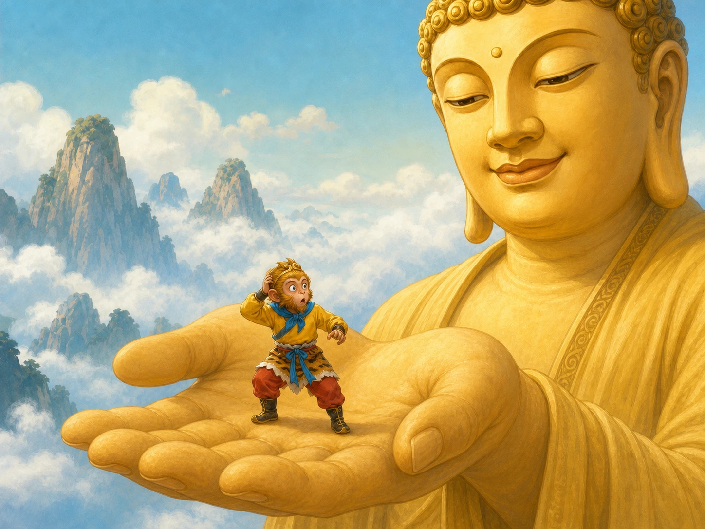

《西游记》：跟着猴王去冒险
Journey to the West: Adventure with the Monkey King
Page 1
一只石猴先玩得很开心，后来忽然开始想大问题
A Stone Monkey Starts Asking a Very Big Question

The stone monkey leaps from a magic rock and discovers the cave behind the waterfall. The story begins with a bright, huge feeling.
《西游记》一开头就很厉害。花果山上有一块仙石，吸了很久很久的日月精华，忽然裂开，从里面蹦出一只石猴。
这只猴子很快就成了猴群里的头儿，还找到了瀑布后面的水帘洞。每天有果子吃，有朋友玩，听起来已经是很快乐的日子了。
可《西游记》最有意思的地方，是它很快就让这只猴子开始想一个很大的问题：如果有一天会老、会病、会死，那现在的快乐够不够呢？
于是，孙悟空决定离开花果山，去学本事。他后来会七十二变，会驾筋斗云，会把世界闹得天翻地覆，可最开始推动他上路的，其实是这个问题。
Journey to the West begins in a way children rarely forget. On Flower-Fruit Mountain, a magic stone gathers the light of the sun and moon for a very long time. One day it cracks open, and out jumps a stone monkey.
The monkey quickly becomes the leader of the other monkeys. He also finds Water Curtain Cave behind a waterfall. With fruit to eat and friends to play with, life already sounds full of joy.
But the story becomes interesting very fast, because the monkey suddenly starts asking a very large question: if one day we will grow old, get sick, and die, is today's happiness enough?
So Sun Wukong leaves the mountain to learn great powers. Later he will transform himself, fly on clouds, and shake the whole world. But the first thing that sends him on his way is this question.
Page 2
他几乎闹翻了天宫，却没有翻出佛祖的手掌心
He Nearly Turns Heaven Upside Down, but He Cannot Jump Out of One Hand

Wukong thinks he has reached the edge of the sky, but the five great pillars are really only the Buddha's fingers.
学会了本事以后，孙悟空越来越不肯受管。他去龙宫拿了金箍棒，又跑去地府，把自己和猴子们的名字从生死簿上划掉。
天上的玉皇大帝想先给他一个小官做做看，没想到孙悟空一发现那是个很小很小的职位，立刻大闹天宫，还给自己起名叫“齐天大圣”。
这一段当然特别热闹，可它最有名的地方，也许是后面那个一下把热闹按住的瞬间。佛祖伸出一只手，说：“你能翻出去吗？”
孙悟空一个跟头翻了很远很远，看见五根像撑天一样的大柱子，还得意地留下记号。可等他回来，才知道自己根本没有跳出去。那“五根柱子”，只是佛祖的手指。
这个场面厉害就厉害在这里：一只本事很大的猴子，第一次碰见了比自己更大的世界。
After learning so many skills, Sun Wukong becomes harder and harder to control. He takes the golden staff from the Dragon Palace. He runs to the land of the dead and scratches out his own name and the monkeys' names from the book of life and death.
The The ruler of Heaven in many Chinese myths and stories. first tries to calm him by giving him a small job in Heaven. But when Wukong realizes the job is low and unimportant, he erupts. He makes trouble in Heaven and gives himself a huge title: Great Sage Equal to Heaven.
That whole part is loud and exciting. But the most famous moment may be the one that suddenly quiets everything down. The Buddha holds out one hand and asks, "Can you jump out of this?"
Wukong flips away, thinking he has gone very, very far. He sees what look like five giant pillars at the edge of the sky and proudly leaves a mark there. But when he returns, he learns the truth. Those pillars are only the Buddha's fingers.
The power of this scene is simple: for the first time, a monkey with enormous power runs into a world larger than himself.
Page 3
后来，最厉害的猴子要学会和别人一起走路
Later, the Strongest Monkey Has to Learn How to Travel with Other People

Tang Monk, Sun Wukong, Zhu Bajie, Sha Monk, and the white horse set out together. That is when the real westward journey begins.
五百年后，孙悟空被放了出来，可条件是要保护一个去西天取经的人。这个人就是唐僧。
从这时候开始，《西游记》就不只是“最厉害的猴子有多厉害”的故事了。它变成了一支很奇怪、也很有趣的小队一起上路的故事。
队里有会翻筋斗云的孙悟空，也有贪吃、爱偷懒、但有时候又挺可爱的猪八戒；有话不多、很稳的沙和尚；还有一匹平时安安静静、其实身份也不普通的白龙马。
这支队伍为什么好看？因为他们并不完美。有人急，有人慢，有人总出主意，有人总想散伙。可路太远了，谁也不能只靠自己走完。
Five hundred years later, Wukong is finally released. But there is one condition: he must protect a monk traveling west to bring back sacred books. That monk is The real monk whose westward journey later inspired Tang Monk in Journey to the West., the model behind Tang Monk.
From this point on, Journey to the West is no longer only a story about how powerful one monkey can be. It becomes the story of a strange and memorable team traveling together.
There is Sun Wukong, who can fly and fight. There is Zhu Bajie, who loves food, complains often, and can still be lovable. There is Sha Monk, quiet and steady. And there is the white horse, who usually stays silent but is not ordinary at all.
Why is this group so enjoyable? Because none of them is perfect. One is impatient. One is lazy. One is reliable. One always wants to move on. But the road is too long for any one of them to finish alone.
Page 4
最难的一关，不一定是妖怪，也可能是不被相信
The Hardest Trial May Not Be a Monster. It May Be Not Being Believed.

The White Bone Demon can disguise herself as a harmless person. Wukong sees a demon, but Tang Monk thinks he sees an ordinary traveler.
《西游记》里最有名的关卡，不一定都是打得最热闹的。有些地方让人记很久，是因为里面有委屈、有误会，也有回头继续陪别人走路的力气。
像“三打白骨精”，孙悟空一眼就认出那是妖怪变的，可唐僧看到的却只是一个个可怜的人。孙悟空越想保护师父，师父越觉得他乱打人，最后还把他赶走了。
这一段让很多人记住，不只是因为白骨精会变来变去，而是因为它问了一个很难的问题：如果你明明知道自己是对的，可你最在乎的人不相信你，你还会不会回来？
后来，孙悟空还是回来了。这就是《西游记》真正长大的地方。它不只是写本事，也在写忠心、忍耐，还有团队里最难学的一课。
The most memorable trials in Journey to the West are not always the loudest battles. Some stay in people's minds because they hold hurt, misunderstanding, and the strength to come back and keep walking with others.
Take the story of the White Bone Demon. Wukong sees at once that the danger is real, but Tang Monk sees only harmless people. The more Wukong tries to protect him, the more Tang Monk thinks Wukong is doing wrong, until he finally sends him away.
People remember this part not only because the demon changes shape. They remember it because it asks a hard question: if you know you are right, but the person you care about does not believe you, will you still come back?
Later, Wukong does come back. That is where the story truly grows up. It is not only about power. It is also about loyalty, patience, and one of the hardest lessons in any team.
Page 5
为什么这只猴子到今天还这么忙？
Why Is This Monkey Still So Busy Today?
今天很多中国孩子认识孙悟空，不一定是先从原书开始的。有人先听故事，有人先看动画片，有人先看电视剧，也有人先在戏台上认识他。
可不管从哪一条路认识，大家最后常常都会记住同一个角色：一只会惹事、会发脾气、会翻大跟头，但也会在关键时候回头帮朋友的猴子。
所以《西游记》一直没有老。它有冒险，有笑的地方，有闹的地方，也有让人一下安静下来的地方。那只从石头里蹦出来的猴子，到现在还在陪一代又一代的人上路。
Today, many Chinese children do not meet Sun Wukong through the original novel first. Some hear the story at home. Some meet him in animation. Some see him on television. Some meet him in opera.
But no matter which road brings them there, many children end up remembering the same character: a monkey who causes trouble, loses his temper, flips through the sky, and still comes back to help the people he cares about.
That is why Journey to the West has not grown old. It has adventure, comedy, noise, and quiet emotional moments too. The monkey who leaped from a stone is still traveling with new readers today.
小结
In Summary
《西游记》不只是妖怪和法术的故事。它先写一只害怕“有一天会死”的石猴，再写这只猴子怎么学会本事、碰见更大的世界、最后跟一群不完美的同伴一起往前走。
也因为这样，孙悟空不只是很会打，他还是中国故事里最会冒险、也最会长大的主角之一。
Journey to the West is not only a story about monsters and magic. It begins with a stone monkey afraid of death, then shows how he gains power, meets a world bigger than himself, and finally learns to keep moving forward with imperfect companions.
That is why Sun Wukong is not only strong. He is also one of the great Chinese story heroes who knows how to adventure and how to grow.